Visualizing training and sampling
t = 0
until t = 1
1.1 Constructing noisy training inputs
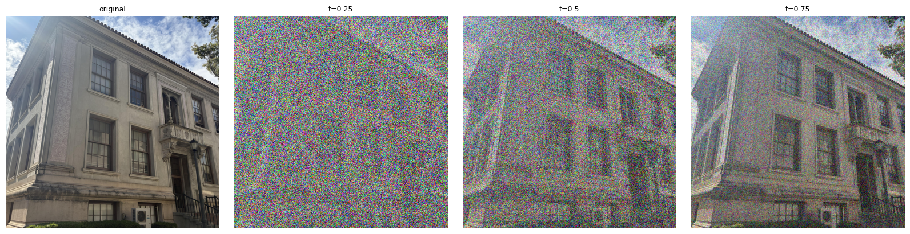
I took a natural photo of a building, and progressively added more noise to it. Here, I use the definition of t=0 implying pure noise and t=1 is the clean image, and I use the same sampled Gaussian noise image for all of these images. In order to interpolate them, I simply added together (1-t) times the noise image plus t times the clean image. As t gets lower, we see more of the image is dominated by noise. Reusing the same sampled noise makes this comparison easier to interpret because the mixture weights are the only values being changed.
Implementation · interpolation
def interpolate(image, noise, t):
return (1-t)*noise + t*image1.2 Classical denoising
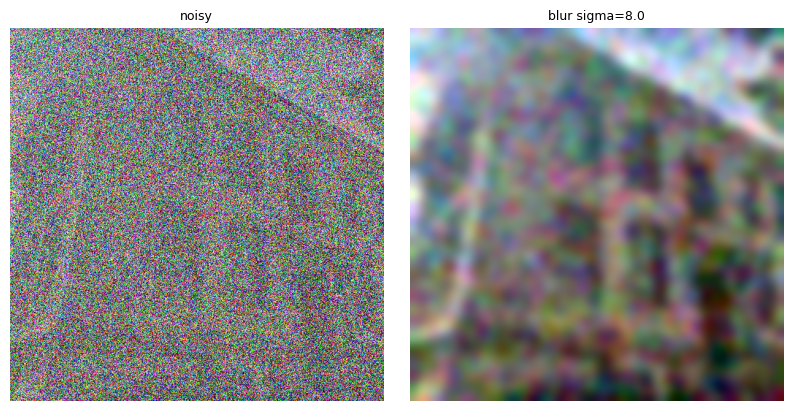
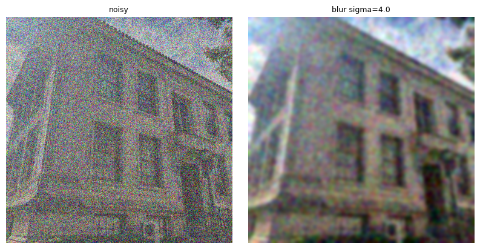
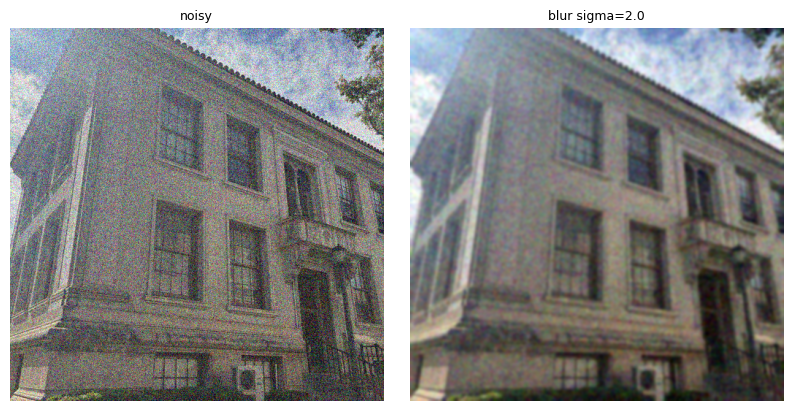
σ candidates: 1, 2, 4, 8, 16 · kernel width: 6σ + 1 · selection: lowest raw MSE to the known clean image
Here I'm using the same sampled Gaussian noise as before, but now the goal is to denoise the images created before using a Gaussian blur. However, before blurring, I divide each noisy input by t so that the original image has coefficient 1 again, as the equation thus becomes xt/t = x1 + (1-t)/t * noise. However, this means that dividing by t also amplifies the noise already present by 1/t for 0 < t < 1, and there isn't much we can do about it. Using this classical method, I attempt to clear the noise by convolving with a Gaussian kernel as Gaussian noise is zero-mean, so averaging nearby pixels reduces the noise variance, although it also blurs the clean image. Unfortunately, blurring the image will also destroy the high frequency information in the image as we know from prior knowledge. The code tests five blur strengths and selects the one with the lowest MSE against the clean photograph, and the selected stddev values are 8, 4, and 2 for t = 0.25, 0.5, and 0.75 respectively. As explained earlier, stronger blur reduces noise but also smooths out the high frequency edges or building details in this image.
1.3 One-step denoising
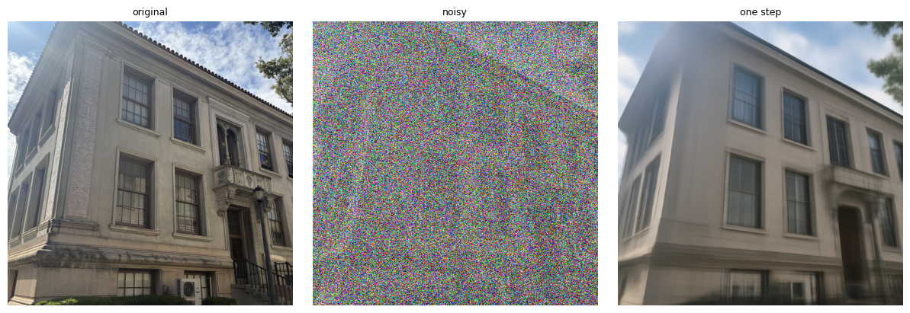
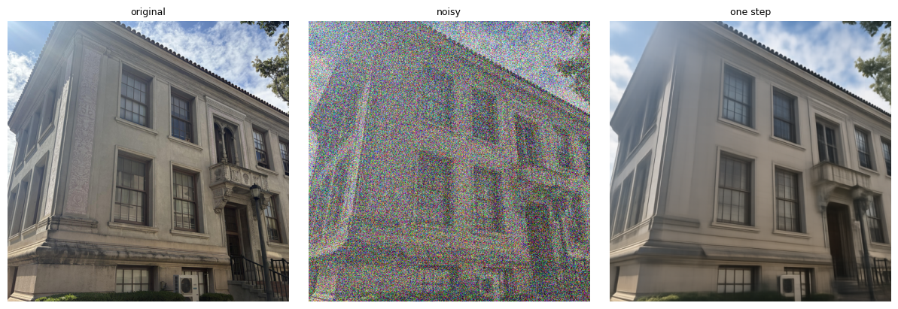
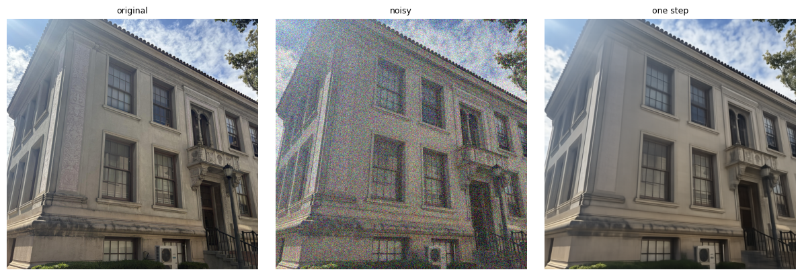
Here, I try a more advanced approach for denoising, where I will evaluate the flow model once at the noisy image at its current time and use the predicted velocity to estimate the image at time=1 (clean). This is done by just adding (1-t) times the velocity prediction to estimate the clean endpoint. The text prompt to the flow model was "a high quality photo", and I used the same noisy inputs at t=0.25, 0.5, and 0.75 to produce their corresponding clean-image estimates. As we can see, a single estimate can recover substantial structure, but extending just one local predicted velocity of the flow model over the whole remaining interval can change/leave out details, especially high frequency ones. This discrepancy becomes more pronounced as the predicted velocity propagates through more time, so we can see substantial smoothing effects from the predicted clean image starting from t=0.25. At a noisy state, several clean endpoints can be plausible, so a one-step estimate can average over those possibilities and look blurry; recomputing the velocity after small steps lets the model follow the changing field.
Implementation · one-step denoising
def one_step_denoise(x, t, condition, predict_velocity):
v = predict_velocity(x, t, condition)
x_denoised = x + (1-t)*v
return x_denoised1.4 Visualizing velocity
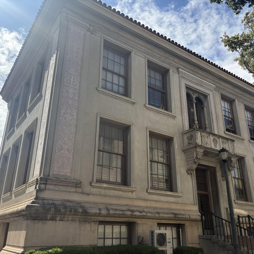
Δpred = (1 − t)v̂, Δgt = (1 − t)vgt = x1 − xt
Et = √meanRGB[(Δpred − Δgt)²]
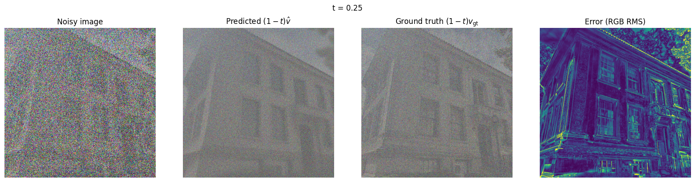
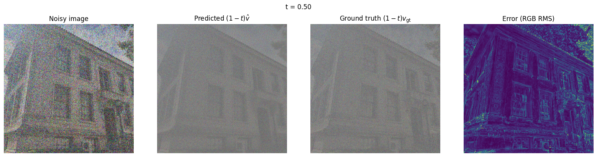
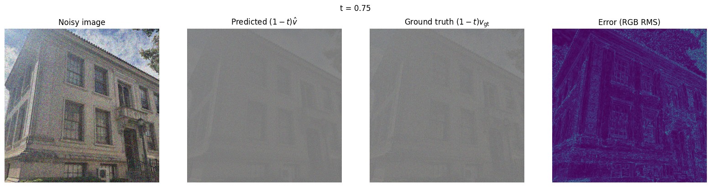
Updates: one shared symmetric RGB scale, zero at middle gray · error maps: linear scale, vmin = 0, vmax = 0.5
Since I know the clean image and the sampled noise, I can compute the true target velocity x1 - noise. Multiplying by 1-t will thus give the exact update needed to recover the clean image from xt, and thus I can compare this with the model's predicted update and compute an RGB RMS error at every pixel (averaged across color channels). The error heatmap uses a fixed display scale from 0 (deep purple) to 0.5 (bright yellow). Values above 0.5 saturate in the visualization, while the raw errors remain unchanged. These are remaining-update errors, so their magnitudes also include the factor 1-t. As expected, the t=0.25 estimate has the most error from the true update needed to recover the original image since the model is given an input containing more noise than the original image compared to the other options. However, the more important feature is that the majority of the error is occurring at the edges of the building and the leaves of the tree. Both are high-frequency details, and this lines up with my earlier analysis that the flow model can struggle with recovering or generating high-frequency content using only one-step denoising.
Implementation · raw update errors
v_pred = predict_velocity(x_t, t, condition)
v_gt = clean_image - epsilon
predicted_update = (1 - t) * v_pred
ground_truth_update = (1 - t) * v_gt
error_map = torch.sqrt(
((predicted_update - ground_truth_update) ** 2).mean(dim=1)
)1.5 Iterative denoising with Euler sampling

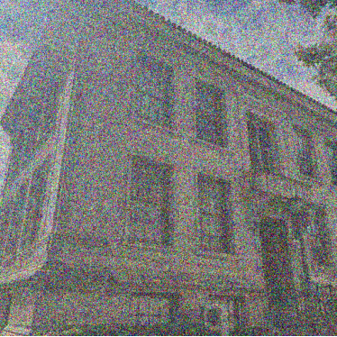

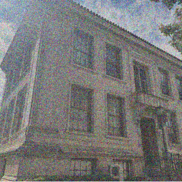

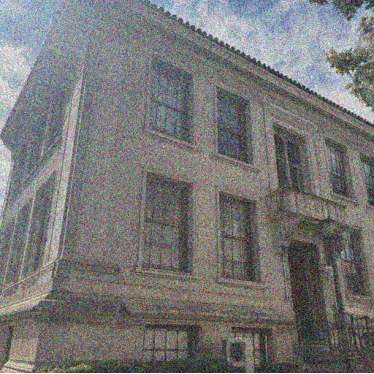

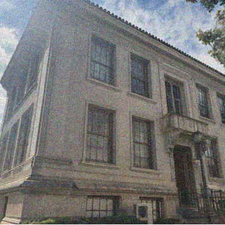

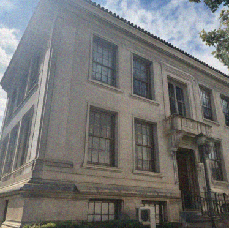

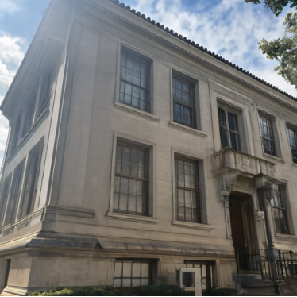
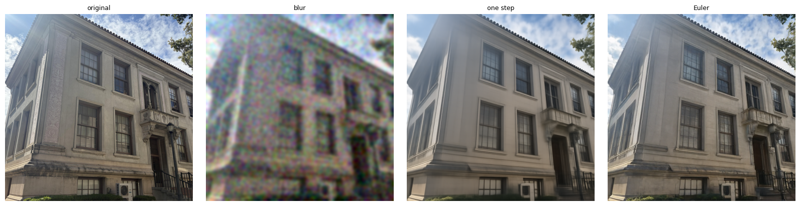
| Method | MSE |
|---|---|
| Gaussian blur · σ = 4 | 0.02389289 |
| One-step denoising | 0.00814187 |
| Euler · 25 updates | 0.00943860 |
With Euler sampling, I now take small steps and predict a new estimated velocity after each step until we reach t=1 for the clean image estimate. This is much different than extending the one prediction straight to the endpoint, and thus these small steps will help in getting to an image that is more defined and distinct rather than having averaging effects. Starting from the saved t=0.5 input, I used 25 updates of dt=0.02 and displayed every fifth update. For the same input, the Gaussian blur denoising has MSE 0.02389, one-step denoising 0.00814, and Euler has 0.00944. One-step has a lower MSE in this run, even though I find its result smoother and less detailed. However, the Euler denoising creates a much more plausible image by "hallucinating" some of the high frequency details, but it is much better that the image contains these high frequency details even if they are not placed in areas that are 100% accurate to the original than not having them at all.
Implementation · Euler sampler
def euler_sample(x_start, t_start, step_size, velocity):
x = x_start.clone()
t = float(t_start)
states = [(t, x.clone())]
while t < 1.0:
dt = min(step_size, 1.0 - t)
x = x + dt * velocity(x, t)
t = min(t + dt, 1.0)
states.append((t, x.clone()))
return x, states1.6 Generating images from noise
Prompt: “a high quality photo” · t: 0 → 1 · h = 0.02 · 50 Euler updates · ordinary conditional velocity

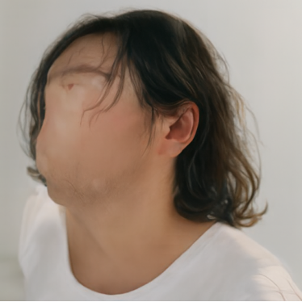

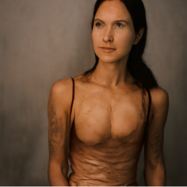

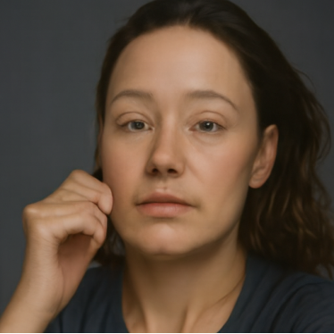

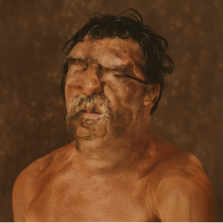

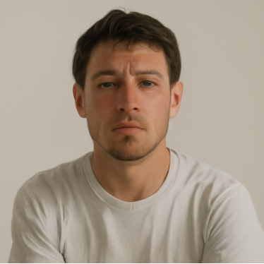
To generate images from scratch, I now start at t=0 and sample independent Gaussian noise and integrate to t=1 using 50 Euler steps. These are already conditional samples of the flow model since I'm providing a text prompt of "a high quality photo". The displayed set of images is predominantly portraits, even though the prompt doesn't request a person, but there is a high amount of variation between the styles of the portraits as some are in a painting style, one is a head-on shot, and some have distorted facial features. Overall, this would suggest a human subject preference for this set of seeds which could just be random noise or it could represent the training dataset of this flow model.
Conditional generation and guidance
Same five initial noises as A 1.6 · h = 0.02 · w = 7 · unconditional prompt: empty string
2.1 Classifier-free guidance


Here, I evaluate the exact same input (same seed) with different conditions, once with "a high quality photo" and the other with an empty, null prompt. Then, in order to apply some guidance to the model I combine these velocities as vc + 7(vc-vu) which will emphasize the difference associated with the text condition and the unconditional behavior of the model. I reuse the seeds 180-184 and the same 50-step schedule, so each pair begins from identical noise. Both sets contain mainly portraits, but in these five samples, guidance reduces the amount of variation between the images but also gets rid of the deformed features seen in some of the images generated without CFG.
Implementation · classifier-free guidance
def cfg_velocity(x, t, condition, w, predict_velocity, null_condition=''):
v_cond = predict_velocity(x, t, condition)
v_uncond = predict_velocity(x, t, null_condition)
return v_cond + w * (v_cond - v_uncond)Creative applications
3.1 Image-to-image editing
Generic prompt: “a high quality photo” · seed 180 reused across each starting-time sweep
Campanile


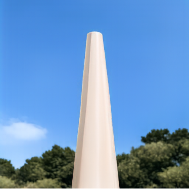

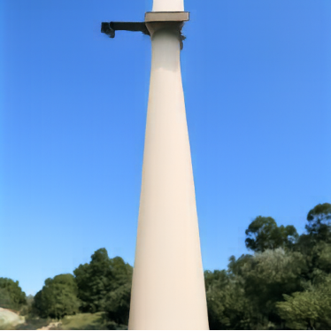

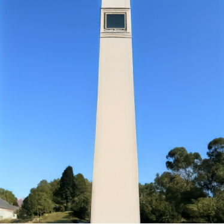

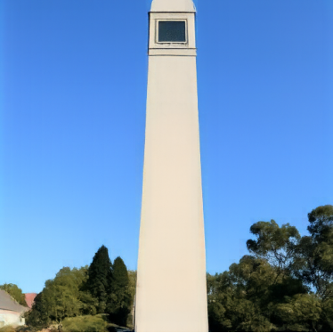


To edit the Campanile, I mix the original image with seed-180 noise at a chosen starting time out of the 7 required times ranging from 0.02 to 0.5, and then sample with Euler iterations up until t=1 using the prompt of "a high quality photo". Moreover, I use CFG with the guidance weight set to 7. At very low starting times, not much of the original Campanile image survives as it is mostly destroyed with noise, so the model can make very large changes. However, larger starting times retain more of the Campanile and its surroundings, as we can see it starts looking more like a tower shape from 0.02 to 0.06 and then going from 0.25 to 0.5 we can see that the clock and more of the building line features survive as the flow model is forced to obey more of the original image surviving.
Other examples · personal photographs
Washington DC War Memorial
Input: IMG_4194.JPG

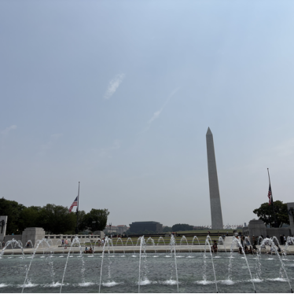

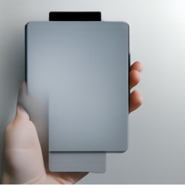

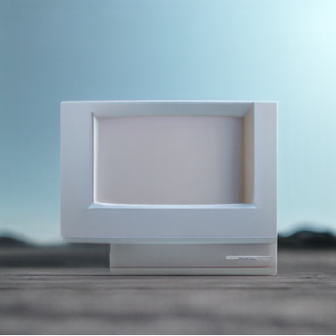


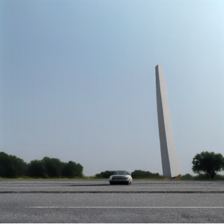

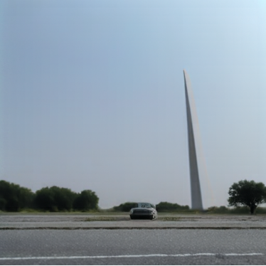

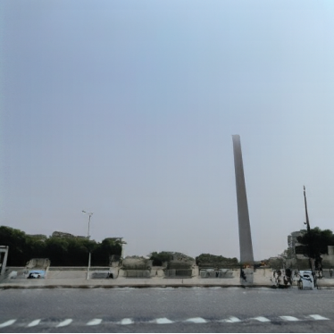

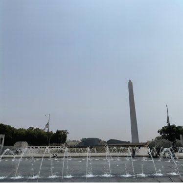
Portrait on rocks
Input: IMG_6780.jpeg


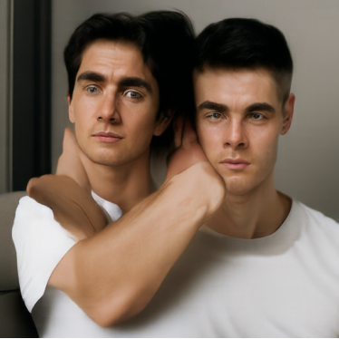

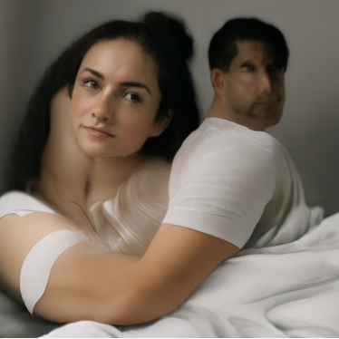

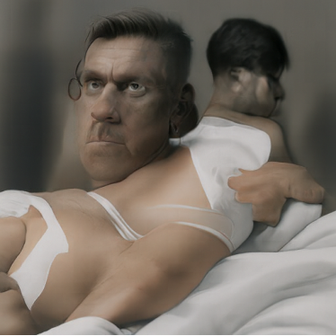


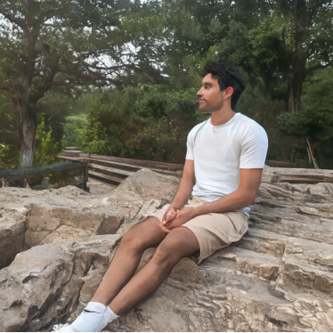
I repeated the same procedure for a picture I took of a War Memorial in DC as well as a portrait of me at the C&O Canal near my home. Again, at low starting times, the sampler has more freedom to replace the subject of the image while larger starts preserve more of the input. For the memorial, the output image is unrecognizable starting from t=0.02 and then we see some of the sky features coming in the later times, and going from t=0.06 to t=0.1 preserves the Washington Monument. For the portrait of me, it's unrecognizable from the original image for t=0.02, 0.04, and 0.06, while the tree background and the feature of me sitting down come back at t=0.10 and get more original details with later starting times.
Editing web and hand-drawn images
Web rabbit image
Input: rabbit_web.jpg

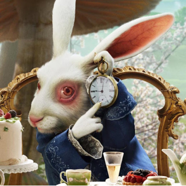


Pizza drawing
Input: pizza.png

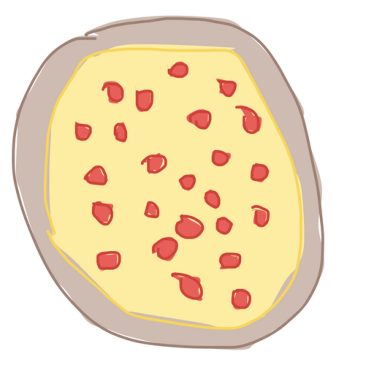

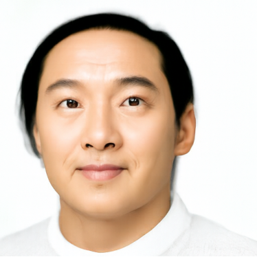


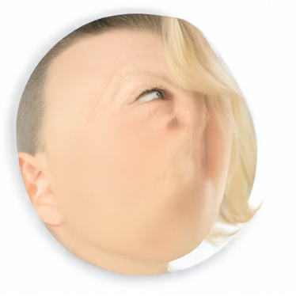

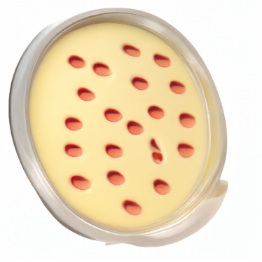

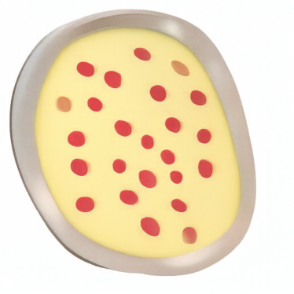


Pool drawing
Input: pool.png


Again, I used the same procedure on a downloaded rabbit meme and two drawings I made, one of a pizza and one of a pool. It is interesting what the model does with the drawings which are clearly not realistic photographs when the prompt is "a high quality photo". The rabbit only becomes recognizable at t=0.25 while earlier times change the image completely as t=0.02 and t=0.04 actually turn the image into a portrait of a human, which we've seen the model has a tendency to create this class of images. Similarly, with the pizza drawing, the model creates a human face in place of the pizza circle for t=0.02 and t=0.04, while we get the rough pizza picture by starting at t=0.10 since it is a simpler drawing without as many textural features. Finally for the pool image, t=0.02 is unrecognizable as some sort of rectangular object, while we get the rough blue rectangle starting from t=0.04 as again there isn't much texture of the pool drawing.
Implementation · editing
def edit(image, noise, t_start, condition, predict_velocity, w=7, step_size=0.02):
x = t_start * image + (1-t_start) * noise
x, states = euler_sample(x, t_start, step_size, lambda x, t: cfg_velocity(x, t, condition, w, predict_velocity))
return x3.2 Text-guided image editing
Campanile → astronaut
Prompt: “photograph of an astronaut in space”


For text-guided editing, which technically we were doing before except with just a generic prompt, I changed the prompt to "photograph of an astronaut in space" while keeping the same noise, starting times, and sampler as before. At low starting times, the output is dominated by an astronaut, but we can see by t=0.06 the astronaut is placed to line up with the Campanile, and then it slowly morphs more and more into a tower shape as we increase the starting time. Compared to the generic prompt sweep, this new prompt gives the model a very specific alternative subject to try to create.
Washington DC War Memorial → clouds
Prompt: “bright blue sky with puffy white clouds”


For the DC memorial, the prompt was "bright blue sky with puffy white clouds" with the same method as earlier. Here, the images at t=0.02 and t=0.04 are entirely sky, while t=0.04 gets a less saturated blue sky color as the sky in my image wasn't as saturated. Starting from later times, we preserve the ground details, and see the fountain details starting from t=0.25. However, even starting from t=0.5 we can see that the model tried adding slightly more clouds in the background compared to the original image.
Portrait → green apple
Prompt: “a green apple”


For my portrait, the prompt was "a green apple", which is a pretty substantial change from my image as I wanted to see how this editing procedure would reconcile this stark difference. The apple dominates from t=0.02 through t=0.06, but after that we see some significant distortion as the model tries and fails to add an apple to this image. However, the structure of me sitting on the rock is somewhat fixed after starting from t=0.25.
3.3 Visual anagrams
Swimmer / television
Seed 180 · upright: “an oil painting of a swimmer” · rotated: “an oil painting of people around a television”

Here, I attempt to create a visual anagram of "an oil painting of a swimmer" when upright and "an oil painting of people around a television" after a 180 deg rotation. At each Euler step, I predict one CFG velocity for the upright state and another for the 180-degree-rotated state. In order to make sure that both update in the same coordinates, I also rotate the second velocity back before averaging. From a high level, we can see that there is a vague person in some sort of body of water, which definitely passes for a swimmer in my books, but there are definitely ambiguities like seeing an upside down TV screen. When rotated, there also is a pretty clear scene of two people watching a small TV, but the area between the two people definitely looks somewhat unnatural.
Staircase / man
Seed 181 · upright: “a lithograph of a staircase” · rotated: “a lithograph of a man”


The second anagram generated with the same method as above pairs "a lithograph of a staircase" with "a lithograph of a man" using seed 181. The staircase is generated upright, while the man acts on a 180 deg rotated state. We see a pretty clear staircase that leads into some sort of brick wall / tunnel, and overall it looks like a pretty natural staircase. However, when flipped upside down, we see a clear outline of a human with their head cropped out of frame. However, there are some unexplained lines on the shirt of the man that can pretty clearly resemble an upside down staircase if you look for it. The rotation check confirms that the coordinate transform is implemented consistently, but it doesn't guarantee that both of the prompts will be equally clear in the final image, and here we can see that the staircase is a more natural image than the man.
Implementation · visual anagrams
def visual_anagrams(noise, condition_a, condition_b, predict_velocity, w=7, step_size=0.02):
def velocity(x, t):
v_a = cfg_velocity(x, t, condition_a, w, predict_velocity)
x_rotated = rotate180(x)
v_b = cfg_velocity(x_rotated, t, condition_b, w, predict_velocity)
v_b = rotate180(v_b)
return (v_a + v_b) / 2
x, states = euler_sample(noise, 0.0, step_size, velocity)
return x3.4 Hybrid images
Gaussian low-pass: σ = 16 · kernel 265 × 265 at 512 × 512 · same image and time in both predictions
Eye / galaxy
Seed 180 · low frequencies: “a human eye” · high frequencies: “detailed space galaxy”


In a similar vein, instead of creating anagrams that shift meaning based off of rotating the image, we can create hybrid images by encoding different velocities for the low and high frequency structures of the output image. In order to achieve this effect, I blur the first guided velocity by convolving with a Gaussian kernel and extract the high-frequency component of the second guided velocity by subtracting its blurred version. I add these two components at each Euler step. The Gaussian kernel has stddev of 16 and a dimension of 265x265. For this image, the eye is intended to remain visible from a distance (low frequency) while the galaxy is supposed to contribute to close up detail (high frequency). This is overall a pretty successful result, as we can see the high frequency textures of a galaxy with the brown clouds, while it definitely retains the overall structure of a human eye which we see when viewing the image from a distance.
Jellyfish / chandelier
Seed 181 · low frequencies: “lithograph of a jellyfish” · high frequencies: “lithograph of a chandelier”

Using the same algorithm, I created a second hybrid with the low frequency velocity from "lithograph of a jellyfish" and high frequency velocity from "lithograph of a chandelier". This one was slightly less successful than the eye/galaxy hybrid, but we can see how the broad shape is intended to support the jellyfish interpretation, but we see that the high frequency detail of the fine ornamental structure supports the chandelier interpretation.
Implementation · hybrid velocity
def make_hybrids(noise, condition_a, condition_b, predict_velocity, w=7, step_size=0.02):
def velocity(x, t):
v_a = cfg_velocity(x, t, condition_a, w, predict_velocity)
v_b = cfg_velocity(x, t, condition_b, w, predict_velocity)
v_low = lowpass(v_a)
v_high = v_b - lowpass(v_b)
return v_low + v_high
x, states = euler_sample(noise, 0.0, step_size, velocity)
return xTraining a single-step denoising UNet
MNIST · 60,000 training images / 10,000 test images · 28 × 28 grayscale · pixels in [0, 1] · seed 180
1.1 Implementing the UNet
Now, in this section I will implement a denoiser utilizing a UNet based model that has an encoder that reduces spatial resolution and a decoder that brings it back to a 28x28 image. The feature maps pass through 28, 14, and 7 pixels per side on the image, and the number of channels doubles when going down to 7 pixels per side. Lastly, average pooling reduces it down all the way to a 1x1. In order to bring it back up to the 28x28 image, we first unflatten using a transposed convolution, and then start increasing the resolution from 7 to 14 to 28 through UpBlocks, which perform transposed convolutions. Before each UpBlock, I concatenate its input with the matching encoder features, and I also concatenate the first ConvBlock’s features before the output ConvBlock. The blocks use convolution, BatchNorm, and GELU, and the denoiser uses hidden dimension 128 after the first layer.
Implementation · skip connections
h0=self.input_block(x)
h1=self.down1(h0)
h2=self.down2(h1)
h=self.unflatten(self.flatten(h2))
h=self.up1(torch.cat((h,h2),dim=1))
h=self.up2(torch.cat((h,h1),dim=1))
return self.output(self.output_block(torch.cat((h,h0),dim=1)))1.2 Noising process
L = E[‖Dθ(z) − x‖²]
In order to create a training dataset for the denoiser architecture I've implemented above, I'll use the MNIST training dataset and add Gaussian noise to the image to create (clean, noisy) training data pairs. I create the noisy image using the equation above, where z is the noisy image, x is the clean image, and sigma is the strength of the noise. Though the clean image is normalized to have pixel intensities within [0,1], the raw noisy tensors can leave this range once the noise intensities are added. Thus, this is slightly different from Part A's interpolation of the noise, as this process doesn't reduce the clean image's coefficient as the noise increases; it just simply adds more noise.
1.2.1 Training at σ = 0.5
UNet D = 128 · batch 256 · Adam lr = 0.0001 · 5 epochs · fresh Gaussian noise for each fetched batch


I trained the D=128 UNet to reconstruct the clean MNIST digits from clean images corrupted with sigma=0.5 noise visualized above. I used the recommended training parameters of batch size = 256, Adam optimization with learning rate 1e-4, and 5 epochs. Each individual image gets its own sampled noise, so the model doesn't repeatedly see the same corruption. We see in the training loss graph, there is a steep dropoff in loss within the first 100 steps and then very little drop in the training loss for the next 1000 steps. The visualizations above are created using the test dataset, and we can see going from epoch 1 to epoch 5 of training shows a decrease in the amount of "fuzziness" around the digits after denoising.
1.2.2 Out-of-distribution testing
Using the denoiser trained above after 5 epochs, I tried seeing its performance under noise levels it was not trained to handle. The same test digit and sampled noise are used for sigma = 0.0, 0.2, 0.4, 0.5, 0.6, 0.8, and 1.0. Since the model was trained with sigma=0.5, this is the in distribution reference, while the others are all out of distribution. On this displayed test digit, the model handles lower noise levels well, and sigma=0.6 is also nearly as performant while we see some degradation artifacts starting from sigma=0.8. This example suggests some generalization beyond sigma=0.5, although a single-digit visualization does not establish performance across the test set.
1.2.3 Denoising pure noise
Fresh UNet D = 128 · input: independent ε ∼ N(0, I) · target: an unrelated training digit · Adam lr = 0.0001 · 5 epochs


| Measurement | Value |
|---|---|
| Mean training MSE, final epoch | 0.067410 |
| Prediction MSE to mean training digit | 0.000180 |
| Mean per-pixel standard deviation across 10 predictions | 0.005531 |
Here, I trained a separate UNet to map pure Gaussian noise to the training set of clean MNIST digits. Since the input noise is generated independently of the digit and thus has no information about which digit is the target, MSE will favor a conditional average in expectation as E[x|noise] is equal to E[x] or the mean overall training image if the noise is independent. The displayed predictions follow this theory as they resemble a blurred combination of digit strokes, with the training image mean shown below the estimates. By epoch 5, the prediction to the mean training image MSE is 0.00018, with a mean per-pixel standard deviation of 0.005531 across ten noise inputs, showing that the model is learning to predict the average as it cannot get any information from the completely random noise. Moreover, the training MSE varies between batches because each batch contains a different mix of digits, whose distances from the average image differ.
Time-conditioned flow matching
2.1 Adding time conditioning
utarget = x1 − x0
L = E[‖uθ(xt, t) − (x1 − x0)‖²]
Two FCBlocks embed continuous t · multiplicative modulation at unflatten and the first decoder stage
Now instead of training a UNet to directly predict a clean digit image from a noisy one, we use a flow model architecture, making the model learn a velocity so we can utilize Euler iterations. During training, I draw an x0 from Gaussian noise, a clean training digit x1, and a randomly sampled time t, then construct the equation above xt = (1-t)x0 + tx1. The derivative of this interpolation is x1-x0, which is our target. I use two fully connected blocks to embed t and multiply features at the unflattened bottleneck / first decoder stage. Each block consists of a linear layer, GELU, and another linear layer. This allows the UNet to use the current noise and data mixture when predicting its update. Moreover, to train the model across the full time interval, training evaluates randomly selected states rather than just running the full generation loop.
Implementation · flow-matching loss
t=torch.rand(x_1.shape[0],device=x_1.device,dtype=x_1.dtype)
x_0=torch.randn_like(x_1)
t_image=t[:,None,None,None]
x_t=(1 - t_image)*x_0 + t_image*x_1
return F.mse_loss(unet(x_t,t),x_1-x_0)2.2 Training the time-conditioned UNet
D = 64 · batch 64 · Adam initial lr = 0.01 · 10 epochs · ExponentialLR γ = 0.1^(1/10) ≈ 0.794328 · step after each epoch
In order to train this time conditioned UNet, I used a hidden channel width D = 64 for 10 epochs with batch size 64 and the Adam optimizer with learning rate starting at 0.01. After every epoch, there is an exponential scheduler to multiply the learning rate by about 0.7943. The mean training velocity MSE has a steep dropoff again within the first 100 steps and then slowly drops off afterward, decreasing from 0.1789 at epoch 1 to 0.0928 at epoch 10. This loss shows that there is an improved fitting of the velocity targets, but this doesn't necessarily mean that the produced image will be what we desired, so below I will display some samples from this model.
2.3 Sampling from the time-conditioned UNet
40 samples per epoch · fixed seed 180 · 50 Euler updates · t: 0 → 1 · Δt = 0.02
As I alluded to in the last section, it's important to actually check some samples rather than just blindly trusting that a low velocity MSE must mean that the final output images will look good. In order to sample, I took 40 images from each time conditioned checkpoint using seed 180 for sampling the pure noise image and 50 Euler steps (dt=0.02). The epoch 1 grid contains many incomplete or ambiguous strokes, but it has grasped that it should go toward the manifold of images with some sort of pen stroke, while the later epochs look like more recognizable digit like shapes, with epoch 5 showing some digits and some malformed strokes and epoch 10 showing mostly clear digits. This model currently doesn't have any digit class conditioning, so the model just chooses which digit to end up at for each given noise sample.
Implementation · Euler sampling
x=torch.randn((40,unet.in_channels,*img_wh),device=parameter.device,dtype=parameter.dtype,generator=generator)
for step in range(num_ts):
t=torch.full((x.shape[0],),step/num_ts,device=x.device,dtype=x.dtype)
x=x + unet(x,t)/num_ts
return xClass-conditioned flow matching
2.4 Adding class conditioning
hup1 ← c2 ⊙ hup1 + t2
Class: one-hot vector of length 10 · independent per-image class dropout p = 0.1 · four FCBlocks for time and class
Now, I changed the model so that we can input a desired digit class into the model. In order to do this, I represent each requested digit with a ten dimensional one-hot vector and embed it using two additional fully connected blocks. At the two decoder locations, the class embedding multiplies the feature map and the time embedding from before is also added. During training, I independently replace the one hot vector with all zeros with probability 0.1. This lets the same network learn predictions without a digit condition, or effectively giving the null condition, which is needed for classifier-free guidance. Just because the input class vector is set to 0 sometimes does not mean that the learned class embedding will be 0 since the fully connected layers have biases, but it does supply a consistent learned null condition.
2.5 Training the class-conditioned UNet
D = 64 · batch 64 · Adam initial lr = 0.01 · 10 epochs · same exponential scheduler as time-conditioned training
This class conditioned model also keeps the D = 64 architecture, batch size 64, 10 epochs of training, and the Adam learning rate decay starting at 0.01. This model predicts the same velocity target, but it receives the digit condition during both training and sampling, with that condition dropped with probability 0.1 during training. Again, we get a huge dropoff in the loss within the first 100 steps, and then the training MSE goes down from 0.1741 after epoch 1 to 0.084102 after epoch 10. These values are lower than the corresponding time only training losses from the saved runs, but again the same caveat applies where a lower velocity loss doesn't imply that the image quality and features that we are looking for are going to be necessarily good.
2.6 Sampling with class guidance
300 Euler steps · Δt = 1/300 · seed 180 · columns 0–9 · four instances of each digit
Now that we have a class conditioned and time conditioned model, I can implement classifier free guidance as well. At each Euler step, I make two velocity predictions for the same current image and time, one with the class condition and one with the null condition, and combine them using the equation above. Here, I generate four examples of each digit at epochs 1, 5, and 10, using seed 180, 300 Euler steps, and guidance weight of 5. Even considering that there are more iterations for this method than previously without class conditioning, the model generates legible digits much faster (in terms of epochs). Epoch 5 using CFG has all legible digits while training until epoch 10 before without class conditioning has some illegible images.
Implementation · Part B guidance and update
v_uncond, v_cond = unet(torch.cat((x, x)), conditions, t, mask).chunk(2)
velocity = v_uncond + guidance_scale * (v_cond - v_uncond)
x = x + velocity / num_tsRemoving the learning-rate scheduler
Independent class-conditioned model · same architecture, seed, batch order, noise, time draws, and class dropout · 10 epochs
| Run | Learning rate | Epoch 1 | Epoch 5 | Epoch 10 |
|---|---|---|---|---|
| Exponential scheduler | 0.01 × 0.794328^(epoch−1) | 0.174067 | 0.091885 | 0.084102 |
| Constant learning rate | 0.003 | 0.147880 | 0.093762 | 0.087025 |
Here, I try a different learning rate schedule instead of the exponential decaying learning rate, as used for training earlier. Here, I remove the scheduler and compensate by lowering the initial learning rate from 0.01 to a constant 0.003 throughout all epochs. The architecture and the other training settings are the same as in the version above. The final epoch average training MSE is 0.087025 compared to 0.084102 for the exponential schedule. Above I plotted the results with epochs 1, 5, and 10 and compared the exponential schedule vs constant learning rate after the 10th epoch, where I can see that the constant learning rate led to thicker/blotchier strokes compared to the exponential schedule. This may be because the constant schedule is still allowed to make large changes to the model deep into the training process, while the exponential schedule allows the model to learn the overall structure of the digits at first and then lowers the learning rate to put the training in a better position to simply make fine adjustments. Overall, I'd say qualitatively that the exponential scheduler creates better outputs. This judgment is based on desirable visual features, such as thinner strokes and less overlap, rather than simply its lower MSE. For example, the first 6 in the constant learning rate image has a nearly filled-in loop.